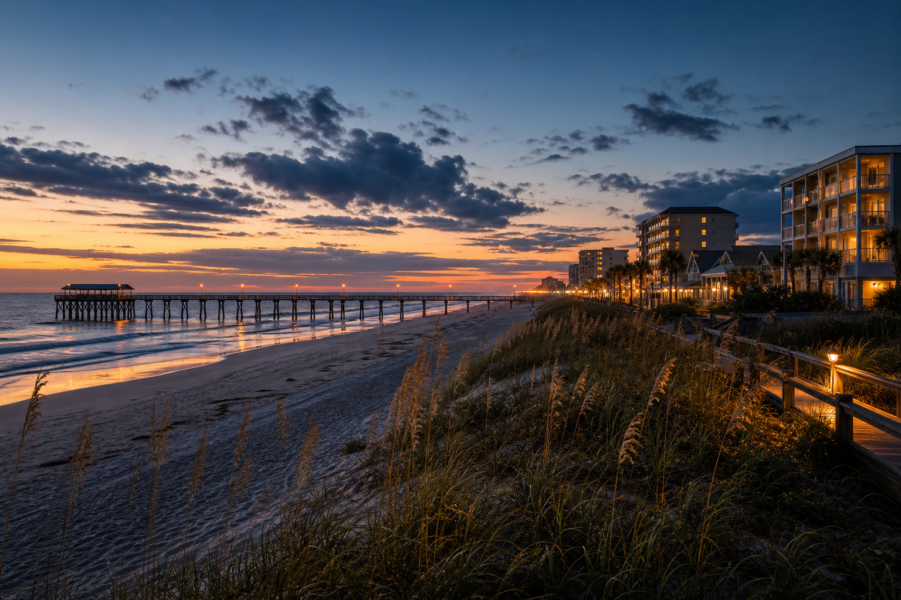

Beach and visitor pressure
Oceanfront properties may need security that can handle guests, residents, visitors, parking, and event movement without changing the relaxed public-facing tone.

Event, property, patrol, and community security support for Jacksonville Beach and nearby coastal sites.
Jacksonville Beach buyers are usually thinking about public-facing security: oceanfront visitors, beach access, event movement, hospitality properties, condos, parking pressure, nightlife edges, and residents who do not want the area to feel locked down.
Highline is a fit when the client needs officers or patrols who can stay approachable while still documenting activity and escalating quickly. The page should appeal to venues, communities, and property managers who need visible order without a hostile beachside look. It is especially useful when the site has changing visitor patterns between weekdays, weekends, and events.
Request CoverageCoverage near the beach can involve pier-adjacent activity, public walkways, condo and hospitality properties, private events, parking lots, and service entrances that may see changing visitor patterns by season, weekend, or event schedule.
Event security can help with guest flow, entrances, and boundaries. Manned guarding fits condos, hospitality, and controlled access points. Mobile patrols help parking areas or multi-building properties, while alarm response helps after-hours sites when owners are not nearby.
A Jacksonville Beach quote should explain the event or property type, expected crowd or visitor pattern, parking or access concerns, seasonality, and whether the client needs a friendly public-facing presence or after-hours patrol documentation.
Jacksonville Beach buyers should weigh visitor pressure, seasonality, parking, and public-facing tone before deciding between event support, guard presence, or patrols.
Oceanfront properties may need security that can handle guests, residents, visitors, parking, and event movement without changing the relaxed public-facing tone.
Entry points, vendor areas, VIP spaces, and crowd movement should be planned before the shift so officers know where visibility matters.
Residential and hospitality sites may need access awareness, after-hours response, and notes that help managers understand repeated conditions.
Highline fits Jacksonville Beach buyers who need a calm, polished presence that supports safety without making the site feel aggressive.
The strongest first conversation gives Highline enough context to separate a simple patrol request from a post that needs a dedicated officer, a temporary fire watch, an event plan, or a broader consulting discussion. That matters in Jacksonville Beach, where the right tone depends on the property type, visitor pattern, access points, and the way the client expects security to communicate.
Before requesting coverage, gather the address or closest service area, the hours of concern, parking or gate instructions, known incident history, preferred uniform tone, and the person who should receive reports. If management needs guard movement visibility, mention GPS tracking or client portal expectations during the quote conversation.